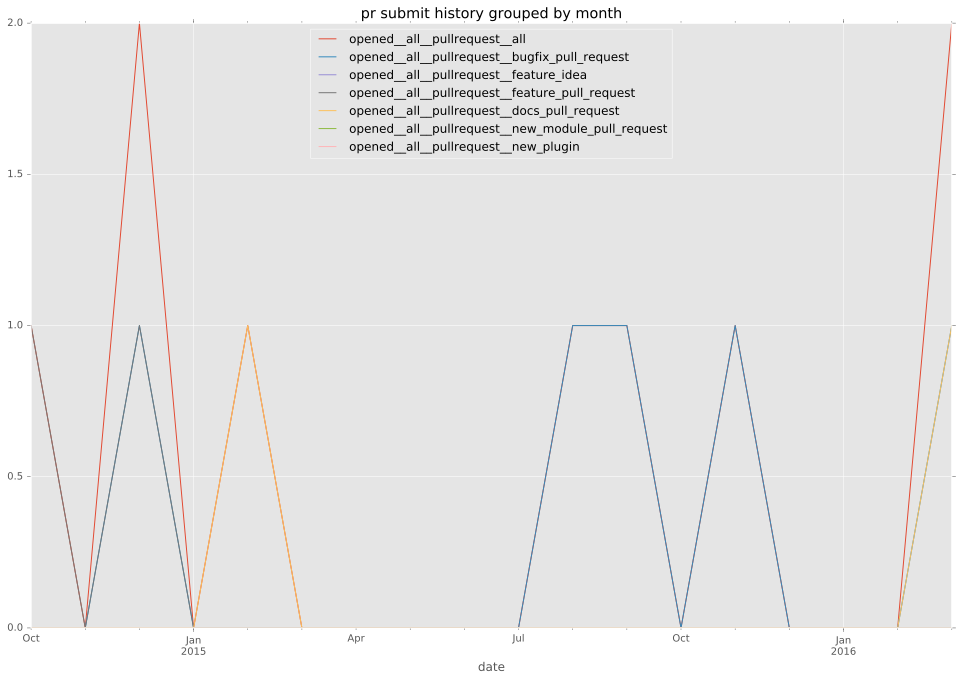
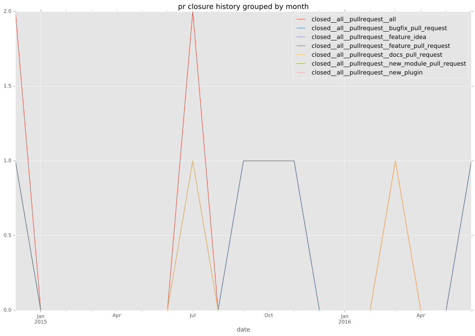

authors
- mattdavispdx
maintainers
- nitzmahone
contributors
- nitzmahone : 25 commits
total issue counts
bugfix pull request: 5
pullrequest: 10
docs pull request: 3
feature pull request: 2
feature idea: 1
issue: 8
bug report: 7
issue history
pullrequest history


days open by issue type
feature pull request
count: 3
std: 83.7157890325
min: 61
max: 206
median: 61.0
mean: 109.333333333
all
count: 22
std: 117.726772969
min: 0
max: 495
median: 31.0
mean: 71.4545454545
pullrequest
count: 0
std: nan
min: nan
max: nan
median: nan
mean: nan
docs pull request
count: 5
std: 66.187612134
min: 0
max: 148
median: 0.0
mean: 29.6
bugfix pull request
count: 8
std: 38.6439793869
min: 0
max: 108
median: 3.0
mean: 25.25
feature idea
count: 0
std: nan
min: nan
max: nan
median: nan
mean: nan
issue
count: 0
std: nan
min: nan
max: nan
median: nan
mean: nan
bug report
count: 6
std: 191.225521309
min: 10
max: 495
median: 60.0
mean: 149.0
closures grouped by total days open